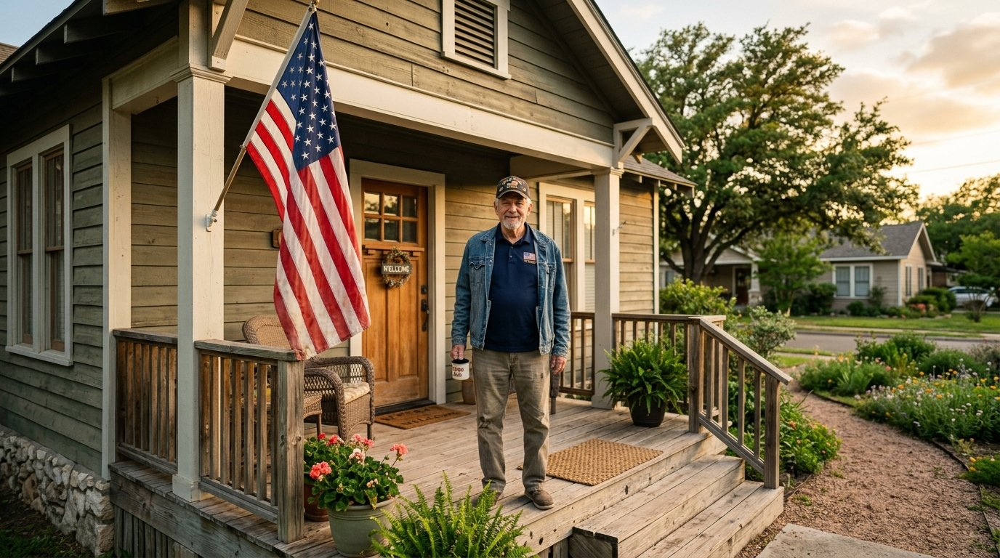

Built for active-duty service members, veterans, and qualifying spouses. The VA loan is one of the most powerful mortgage benefits in the country and we have closed hundreds of them.

VA loans waive private mortgage insurance, allow seller-paid closing costs up to 4%, and let you reuse the benefit your whole life.
Use this honest checklist before applying. If most of these describe you, the VA program will likely be your best path.
Every Guarantee Mortgage loan officer walks you through each step in plain English. No surprises, no jargon, no hidden fees.
We pull your Certificate of Eligibility from the VA and confirm your entitlement amount the same day.
A 10-minute application and soft credit pull tells us your max loan amount and locks in a rate range.
Shop with confidence. Your pre-qualification letter makes offers stronger and closings faster.
Our average VA close in Texas is under 4 weeks. You move in, we wire the funds, done.
One short application, 200+ lenders bidding for your business. See your real rate, your real payment, and your closing costs before you commit.